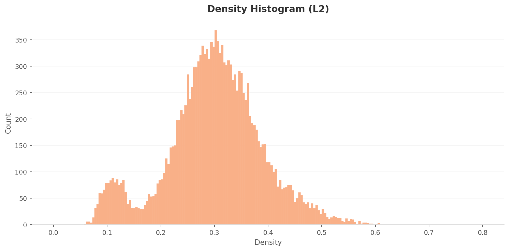
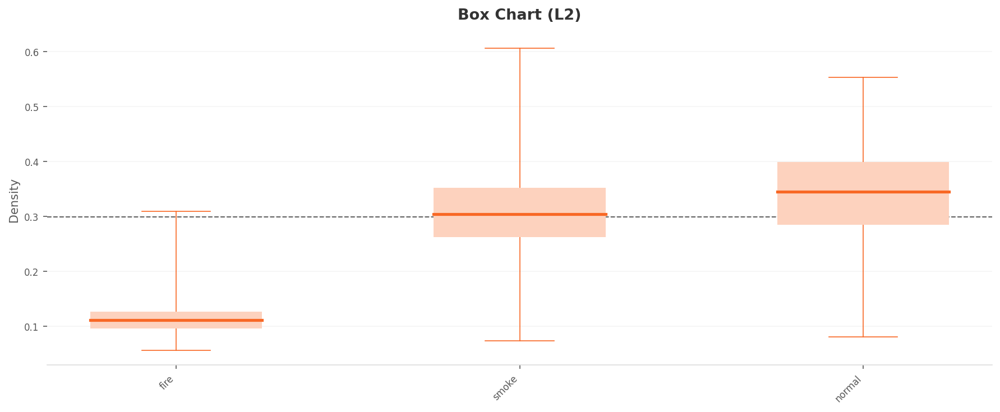
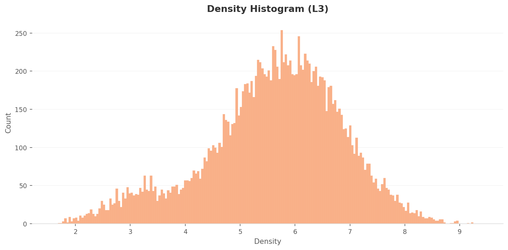
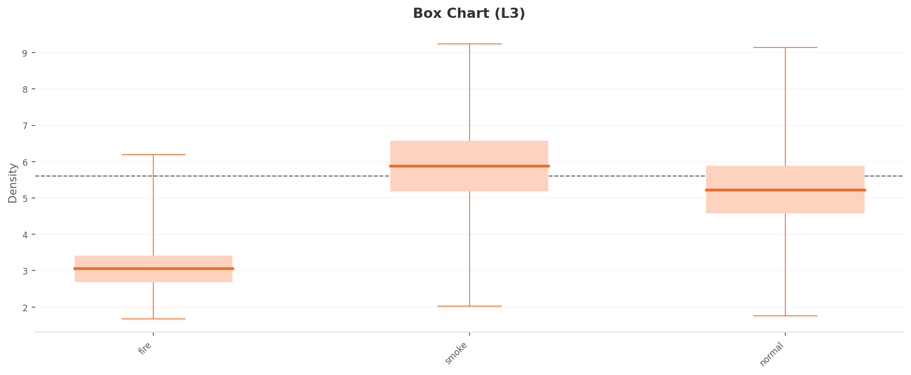

Executive Summary
이 글은 DataClinic 리포트 #38의 분석을 바탕으로 합니다. 진단 대상은 캐글(Kaggle)에 공개된 산불 이미지 데이터셋 Forest Fire입니다. 불(fire)·연기(smoke)·정상(normal) 세 종류, 모두 15,751장으로 이루어져 있습니다. 그런데 불을 감지하라고 모은 이 사진들의 82.8%가 연기였고, 정작 불은 7.2%(1,127장)에 그쳤습니다. 가장 감지해야 할 대상이 가장 적게 모인 셈입니다.
DataClinic은 데이터를 1,280차원 범용 렌즈(L2)로 본 뒤, 클래스 구별에 실제로 기여하는 17차원만 추려낸 특화 렌즈(L3)로 다시 봅니다. 이 압축은 연기와 정상이 거의 겹쳐 있던 경계를 또렷하게 갈라 놓았습니다. 그런데도 끝내 풀리지 않은 장면이 두 개 남았습니다. AI가 세 번째로 연기 같다고 본 풍경은 연기 한 점 없는 맑은 강(normal_457)이었고, 가장 불 같지 않다고 본 화재는 연기가 화면을 뒤덮은 들불(fire_392)이었습니다.
이 두 장면은 방향이 정반대인 두 실패를 예고합니다. 이 데이터로 학습한 산불 AI는 맑은 하늘에 헛경보를 울리고(오탐), 번지기 시작한 들불은 놓칩니다(미탐). 놓치면 인명이, 헛울리면 신뢰가 걸리는 산불 감지에서, 정반대의 두 위험이 한 데이터셋에 나란히 들어 있는 셈입니다. 그 경계에 걸린 두 장면을 지금부터 실제 데이터셋 이미지로 한 장씩 꺼내 봅니다.
※ DataClinic 종합 점수·등급은 인증이 필요한 항목이라 이 글에서는 다루지 않습니다. 진단은 공개된 L1·L2·L3 분석 콘텐츠를 기준으로 했습니다.
Forest Fire 15,751장 — 무엇을 모았나
Forest Fire는 산불을 화면에서 자동으로 알아채는 모델을 만들려고 모은 데이터셋입니다. 라벨은 셋으로 단순합니다. 불꽃이 보이면 fire, 연기가 보이면 smoke, 아무 이상이 없으면 normal입니다. 항공 드론샷, 산림 감시카메라 프레임, 현장 사진이 뒤섞여 있어 촬영 조건이 무척 다양합니다.

▲ Forest Fire 데이터셋 콜라주 — 불꽃 클로즈업부터 산 위 연무, 평온한 풍경까지 한 화면에 섞여 있습니다.
가장 먼저 눈에 띄는 것은 세 클래스의 심한 쏠림입니다. 연기가 13,045장으로 전체의 82.8%를 차지하는 반면, 불은 1,127장뿐입니다. 연기가 불의 11.6배에 달합니다. 산불 데이터를 모을 때 불꽃 자체보다 연기 장면을 훨씬 쉽게 구할 수 있다는 현실이 그대로 반영된 결과로 보이지만, AI 학습 관점에서는 짚어 둘 신호입니다.
▲ 클래스 분포. 막대 길이는 전체 15,751장 대비 비율(세 막대 합 100%)입니다.
나머지 기초 점검은 비교적 깨끗합니다. 라벨 정합성에는 문제가 없고, 결측치도 특이사항이 없습니다. 이미지 크기는 가로 240px부터 2000px까지 폭이 넓고, 색상 채널은 99.76%가 RGB지만 0.24%가 RGBa여서 가벼운 주의가 붙었습니다. 출처는 캐글의 kutaykutlu/forest-fire 데이터셋입니다.
세 클래스의 평균 얼굴 — Level 1
Level 1은 픽셀 수준의 기초 체력 검사입니다. 여기서 한 클래스의 사진을 전부 겹쳐 평균을 내면, 그 클래스의 '평균 얼굴'이 나옵니다. 평균 이미지가 또렷할수록 구도와 색이 일관된다는 뜻이고, 흐릿할수록 안에 든 사진이 제각각이라는 뜻입니다. 아래는 각 클래스의 실제 대표 사진(왼쪽)과 평균 이미지(오른쪽)를 나란히 놓은 것입니다.
 실제
실제
 평균
평균
 실제
실제
 평균
평균
 실제
실제
 평균
평균
▲ 각 카드 왼쪽은 실제 대표 사진, 오른쪽은 같은 클래스 전체를 픽셀 단위로 평균한 이미지입니다.
세 평균 얼굴은 색으로 갈립니다. fire는 주황빛이 중앙에 뭉치고, smoke는 회백색이 화면 전체로 퍼지며, normal은 초록과 하늘색이 자리를 잡습니다. 색만 보면 셋은 충분히 다른 것처럼 보입니다. 문제는 이 '색의 평균'이 가려 버리는 경계입니다. 연기의 회백색과, 안개나 흐린 하늘이 섞인 정상 풍경의 회백색은 평균 단계에서 이미 닮아 있습니다. 이 닮음이 뒤에서 어떻게 번지는지가 이 글의 줄기입니다.
1,280차원이 본 풍경 — Level 2
Level 2는 Wolfram ImageIdentify Net V2라는 범용 신경망의 눈으로 데이터를 봅니다. 사진 한 장이 1,280개의 숫자로 바뀌고, 비슷한 사진은 가까이, 다른 사진은 멀리 놓입니다. DataClinic은 각 사진이 같은 클래스 친구들 사이에서 얼마나 빽빽한 곳에 있는지를 '밀도'로 표시합니다. 밀도가 높을수록 그 클래스의 전형에 가깝다는 뜻입니다.
먼저 전체 밀도 분포를 보면 봉우리가 둘인 이봉(bimodal) 형태입니다. 낮은 쪽 작은 봉우리는 주로 fire가, 높은 쪽 큰 봉우리는 smoke와 normal이 만듭니다.

▲ L2 전체 밀도 분포(범위 약 0.06–0.61). 낮은 쪽 작은 봉우리에 fire, 높은 쪽에 smoke·normal이 몰립니다.
클래스별로 밀도의 한가운데 값(중앙값)을 비교하면 문제가 또렷해집니다. fire는 0.11로 확연히 낮은데, smoke는 0.30, normal은 0.33입니다. 다수 클래스인 연기가 오히려 정상보다 살짝 낮습니다. 더 중요한 것은 둘의 차이가 0.03밖에 안 된다는 점입니다. 1,280차원 범용 렌즈로는 연기와 정상을 밀도만으로 가르기가 사실상 어렵습니다.

▲ L2 클래스별 밀도(박스플롯). smoke(0.30)와 normal(0.33)의 상자가 거의 포개져 있습니다. 경계가 흐립니다.
같은 흐림이 공간 그림에서도 보입니다. 아래 PCA는 1,280차원을 평면에 눌러 펼친 지도입니다. 점들이 어느 한 곳에 모이지 않고 화면 전체에 고르게 흩어져 있어, 클래스 사이의 경계랄 것이 잘 보이지 않습니다. 범용 렌즈가 본 산불 데이터는 아직 '한 덩어리에 가까운 안개' 상태입니다.

▲ L2 PCA. 뚜렷한 핵심 군집 없이 점들이 넓게 분산됩니다 — 경계가 아직 흐릿합니다.
17차원으로 압축하니 — Level 3
Level 3은 1,280차원 중에서 클래스를 구별하는 데 실제로 기여하는 차원만 골라 17차원으로 줄인 특화 렌즈입니다. 약 75배 압축인데, 무작정 버린 것이 아니라 구별 신호가 또렷한 축만 남긴 결과입니다. 그래서 같은 데이터를 다시 봐도 경계가 더 선명해집니다.
전체 밀도 분포부터 달라집니다. L2의 두 봉우리가 사라지고, 가운데가 불룩한 종 모양 단봉으로 정리됩니다. (밀도 값의 범위가 1.7–9.3으로 L2보다 약 15배 커졌는데, 이건 데이터가 좋아져서가 아니라 점들이 더 좁은 공간에 모인 수학적 효과입니다. 그래서 L2와 L3의 밀도 숫자를 직접 비교하면 안 되고, 같은 레벨 안에서만 견줘야 합니다.)

▲ L3 전체 밀도 분포(범위 약 1.7–9.3). L2의 이봉이 종 모양 단봉으로 정리됐습니다.
클래스 분리는 눈에 띄게 좋아졌습니다. 중앙값이 fire 3.0, normal 5.2, smoke 5.9로 벌어지면서 fire ≪ normal < smoke 순서가 분명해집니다. L2에서 0.03에 불과했던 연기와 정상의 간격이 약 0.6으로 벌어졌습니다. 다수 클래스인 연기가 가장 전형적인 자리(최고 밀도)로 올라서며 제자리를 찾은 셈입니다. fire는 상자가 가장 좁아서, 전형적인 불꽃 사진끼리는 서로 비슷하지만 수가 적다는 사실이 함께 드러납니다.

▲ L3 클래스별 밀도(박스플롯). fire(3.0)·normal(5.2)·smoke(5.9)로 중앙값이 벌어졌습니다. 점선은 전체 평균(약 5.6).
공간 그림도 재편됐습니다. L3 PCA에서는 오른쪽 아래에 점들이 뭉친 조밀한 핵이 생기고, 왼쪽으로는 점들이 성기게 흩어집니다. L2의 고른 안개가 '핵 하나 + 산포'라는 구조로 바뀐 것입니다. (PCA의 점에는 클래스 색이 입혀져 있지 않습니다. 다만 밀도 분석을 겹쳐 보면, 최고 밀도인 연기가 이 오른쪽 핵을 이루고 밀도가 가장 낮은 fire가 왼쪽 산포에 놓이는 것으로 읽힙니다.) 차원 최적화가 한 일이 여기서 가장 잘 보입니다.

▲ L3 PCA. 점들이 오른쪽 아래 조밀한 핵과 왼쪽 산포로 또렷이 갈립니다. 점에 클래스 색은 없지만, 밀도 분석상 핵은 smoke, 산포는 fire·일부 normal로 읽힙니다(DataClinic 분석).
각 클래스의 밀도 지도와 대표 사진을 나란히 보면, 세 클래스가 17차원 공간에서 어디를 차지하는지가 보입니다. fire는 좌상단 모서리에 작게 고립되고, smoke는 중앙·우하단을 넓게 지배하며, normal은 그 변두리에 자리잡되 일부가 smoke 영역으로 넘어가 있습니다.
 밀도
실제
밀도
실제
 밀도
실제
밀도
실제
 밀도
실제
밀도
실제
▲ 각 카드 왼쪽은 L3 밀도 지도, 오른쪽은 해당 클래스 대표 사진입니다.
그런데 분리가 좋아졌다는 이 그림 안에, 그래도 풀리지 않은 두 장면이 숨어 있습니다. normal 가운데 하나가 smoke 핵의 코앞까지 들어와 있고, fire 가운데 하나가 가장 낮은 밀도로 떨어져 있습니다. 다음 두 절에서 이 둘을 차례로 들여다봅니다.
가장 연기 같았던 '정상' — 오탐의 씨앗
L3 밀도가 가장 높은, 즉 가장 연기 같은 사진 1·2위는 모두 smoke였습니다(각각 9.24, 9.21). 그런데 3위(9.14)는 normal 라벨이 붙은 normal_457이었습니다. 1위 smoke와의 차이가 0.1에 불과합니다. 정상으로 분류된 사진이, 가장 전형적인 연기와 거의 같은 자리에 앉아 있다는 뜻입니다. 무엇을 찍은 사진인지 직접 봤습니다.

맑은 하늘 아래 강을 내려다본 드론샷. 두 줄기 강물이 가운데 둑을 감싸고, 둑 위에는 빨간 소방차가 줄지어 서 있습니다. 연기도 불꽃도 없습니다.

안개 자욱한 산림 감시카메라 프레임(2017-03-19). 소나무 사이로 흰 연무가 번집니다. 초기 산불 연기와 육안으로 구별하기 어렵습니다 — 연기로 분류된 것이 납득됩니다.
▲ 거의 같은 밀도(9.14 vs 9.24)인데, 왼쪽은 맑은 강, 오른쪽은 안개 낀 숲입니다.
왜 맑은 강이 연기와 같은 자리에 앉았을까요. 단정하기는 어렵습니다. DataClinic의 분석을 따르면, 황금빛으로 확산된 대기, 수면에 반사된 밝은 톤, 화면을 가로지르는 둑의 구도가 연기 사진의 특징 공간과 겹친 것으로 추정됩니다. 회색 안개색 그 자체 때문은 아닙니다. 이걸 보여 주는 반례가 같은 데이터셋에 있습니다.
맑고 또렷한 강. 육안으로는 안개 기운이 거의 없는데, 밀도는 최고권입니다.

회색 연무가 깔린 흐린 농촌 마을 항공샷. 육안으로는 normal_457보다 훨씬 더 연기 같은데, 밀도는 오히려 최하위권입니다.
▲ 더 안개 같아 보이는 normal_13이 더 낮은 밀도를 받습니다. '연기다움'은 안개색만으로 설명되지 않습니다.
두 장을 나란히 두면 결론은 분명합니다. 모델이 '연기 같다'고 보는 신호는 회색 톤이라는 단순한 색이 아니라, 밝게 확산되는 대기의 질감과 공간 구성 같은 더 깊은 특징입니다. normal_457은 그 깊은 특징을 우연히 닮았고, normal_13은 색은 비슷해도 그 특징에서는 멀었습니다. 17차원 압축은 이 미세한 차이를 읽어 냈지만, 동시에 normal_457을 끝내 연기 옆에 남겨 두었습니다.
가장 불 같지 않았던 '화재' — 미탐의 씨앗
반대편 끝에는 fire가 있습니다. L3 밀도가 가장 낮은, 즉 자기 클래스 전형에서 가장 멀리 떨어진 사진 1위(1.68)가 fire였습니다. fire_392입니다. 전형적인 불꽃은 주황빛이 화면 가득 타오르는데, 이 사진은 정반대였습니다.

마른 풀밭이 타는 초원 들불. 지평선에서 피어오른 연기가 화면의 70%를 수평으로 뒤덮고, 불꽃은 멀고 작습니다. 불보다 연기가 지배하는 장면입니다.
주황 불꽃이 화면을 채우는 클로즈업. fire 클래스가 '불'이라고 할 때 떠올리는 바로 그 모습입니다.
▲ 같은 fire 라벨인데, 왼쪽은 연기에 가깝고 오른쪽은 전형적인 불꽃입니다.
fire_392가 위험한 이유는 이 장면이 곧 초기 들불의 모습이기 때문입니다. 불이 막 번지기 시작할 때는 불꽃보다 연기가 먼저, 더 넓게 보입니다. 그런데 이 데이터에서 그런 장면은 fire 전형에서 가장 멀리 떨어진 이상치로 취급됩니다. 학습 데이터가 이렇게 짜여 있으면, 모델은 '활활 타는 큰 불꽃'에만 익숙해지고 번지기 시작한 들불은 연기나 모호한 장면으로 흘려보내기 쉽습니다.
저밀도 fire 2위인 fire_448은 다른 결의 이상치입니다. 노란 방화복을 입은 소방관이 호스로 근접 화염을 진압하는 장면인데, 사람의 존재가 전형적인 불꽃 클로즈업(인물 없음)에서 벗어나게 만듭니다. 현실의 화재 현장에는 늘 사람과 장비가 함께 있지만, 데이터의 'fire 전형'에는 그들이 빠져 있습니다.
산불 감지 AI의 두 얼굴 — 실전이라면
지금까지 본 두 장면은 그냥 흥미로운 예외가 아닙니다. 이 데이터로 학습한 산불 AI가 실전에서 어떻게 틀릴지를 미리 보여 줍니다. 방향이 정반대인 두 실패가 한 데이터셋에서 동시에 자랍니다.
새벽, 기온 역전으로 강과 계곡에 옅은 안개가 깔립니다. 밝게 확산된 대기와 수면 반사가 연기 고밀도 영역과 닮아 보입니다.
AI 판단 → "연기 감지, 산불 경보"
근거 이미지: normal_457 (맑은 강)
대가: 헛출동과 경보 피로. 잦은 거짓 경보는 정작 진짜 경보의 신뢰를 갉아먹습니다.
건기의 초원, 불이 지평선에서 막 시작됩니다. 화면의 대부분은 연기고 불꽃은 멀어서 작습니다.
AI 판단 → "연기 또는 모호함, 화재 경보 미발령"
근거 이미지: fire_392 (초원 들불)
대가: 골든타임 상실. 가장 빨리 잡아야 할 초기 화재를 놓치는, 가장 치명적인 실패입니다.
▲ 두 시나리오 모두 실제 데이터셋에 들어 있는 사진(normal_457, fire_392)을 근거로 합니다.
두 실패는 성격이 다릅니다. 오탐은 신뢰를 깎고, 미탐은 시간을 빼앗습니다. 그리고 안전 시스템에서 더 무거운 쪽은 대개 미탐입니다. 헛경보는 짜증으로 끝나지만, 놓친 불은 돌이킬 수 없기 때문입니다. 그런데 이 데이터셋은 하필 가장 희소한 fire(7.2%) 안에 그 미탐의 씨앗을 품고 있습니다.
그래서 처방은 '더 많이 모으기'가 아니라 '어디를 채울지 알고 모으기'가 됩니다.
결론 — 현실 데이터의 모호함을 진단한다는 것
Forest Fire는 잘못 만든 데이터셋이 아닙니다. 라벨은 정합하고 결측치도 없으며, 15,751장이라는 적지 않은 규모를 갖췄습니다. 다만 현실에서 긁어모은 산불 사진이기에, 현실의 모호함을 그대로 물려받았습니다. 연기와 안개와 평온한 풍경이 자연스레 섞이고, 불은 늘 연기를 동반합니다. 17차원 압축은 이 모호함의 대부분을 갈라냈지만, 경계의 두 장면은 끝까지 남았습니다.
같은 '3클래스'라도 데이터의 출신에 따라 결이 다릅니다. 페블러스가 진단한 군용 3종 합성 데이터셋(#225)과 나란히 두면 차이가 또렷합니다.
| 비교 축 | #38 Forest Fire (이 글) | #225 군용 3종 |
|---|---|---|
| 클래스 | fire / smoke / normal | 자주포 / 트럭(덮개) / 트럭(무덮개) |
| 데이터 성격 | 실사 · 웹 수집(Kaggle) | 합성(synthetic) · 큐레이션 |
| 클래스 균형 | 극심한 불균형 (연기 82.8%) | 설계상 균형 (클래스당 동일) |
| 경계 모호성 | 연기↔안개↔정상이 자연스레 혼선 | 카메라 각도별 서브클러스터(설계로 통제) |
| 중복 | 연속 프레임 다수 | 통제됨 |
합성 데이터는 클래스 경계를 설계할 수 있어 분리가 깔끔합니다. 반면 실사 산불 데이터는 현실의 모호함을 피할 수 없습니다. 그렇다면 현실 데이터의 품질 문제는 무작정 더 모아서 풀리지 않습니다. 어디가 흐린지, 어떤 장면이 경계에 걸려 있는지를 먼저 진단하고, 그 자리를 겨냥해 채우는 편이 빠릅니다. DataClinic이 normal_457과 fire_392를 집어낸 것처럼, '무엇을 더 모을지'는 데이터를 들여다본 뒤에야 또렷해집니다. 이것이 페블러스가 데이터를 다루는 방식입니다.
이 데이터셋의 임베딩 단위 탐색은 향후 페블로스코프에서 더 깊이 들여다볼 수 있습니다. 전체 진단은 DataClinic 리포트 #38에서 확인하세요.
참고문헌
- 1.Kutlu, K. (2020). Forest Fire. Kaggle.
- 2.Pebblous. (2026). DataClinic Diagnosis Report #38: Forest Fire. Pebblous Inc.